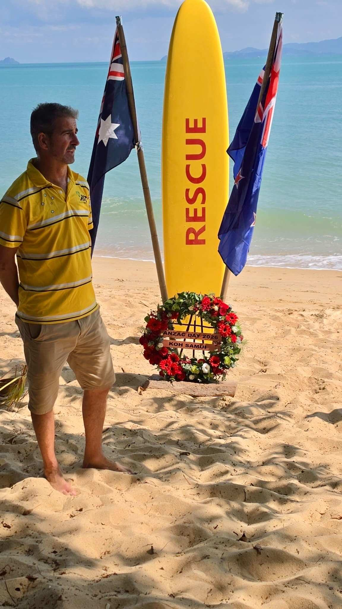

2025/2026 Committee
Matt

Matt
Matt is one of the club's founders along with Gary.
Matt played a key role in establishing the relationship with the Thai owners of Nature Bar, initially securing the venue to host the children's swimming programme on Sunday mornings. As the programme grew, Matt coordinated the plan and development of the Koh Samui Surf Lifesaving Club.
Matt also manages the venue's staff and logistics, developing relationships with the local parents, sponsorship, marketing, social media and other key tasks as part of heading up the committee during the formative stages of the club.